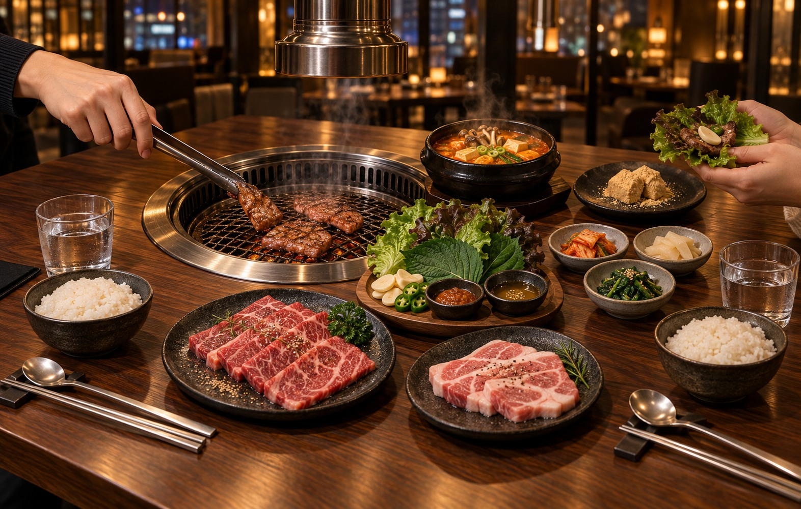
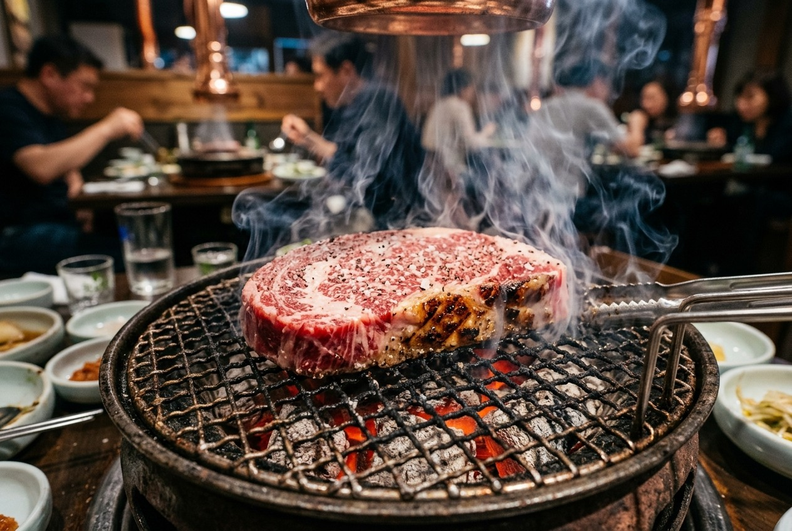
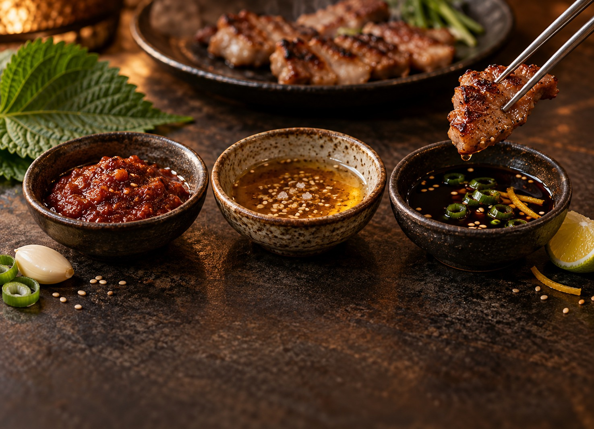
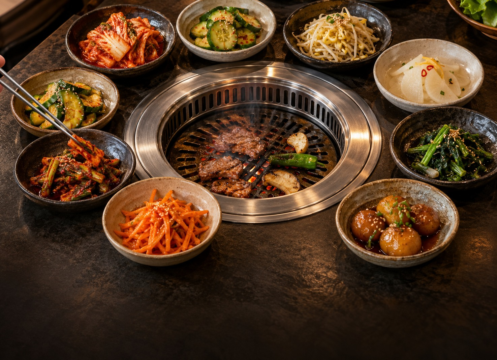

The Ritual of the Grill
Six moves, one shared grill — make the night yours.
Choose together
Choose individual cuts or a sharing set, then let the table build the meal together.
At the table: Start with a set for the opening round, then add individual cuts as everyone finds a favorite.

The grill takes center stage
Coals settle and the grate heats quickly. The fire gives every cut its place at the table.
Good to know: Your server can raise or lower the charcoal tray whenever the heat needs a quick adjustment.

Cook at your own pace
Tend the grill as a team, or let our staff finish a cut that needs a practiced hand.
Best rhythm: Begin with quick-cooking cuts, then move to richer pieces as the grill reaches its full heat.

The ssam moment
Leaf, rice, dip, meat, garlic — wrap one bite and make the table's favorite combination.
Make it yours: Build one at a time or pass the leaves around — there is no single correct combination.

Small dishes, big work
Cool, crisp banchan reset the palate between cuts so each new bite stays bright and balanced.
Reset the palate: Use something cold or sharp between richer bites, then return to the grill refreshed.

Every table works a little differently
Most guests grill their own; for certain cuts — and on busy nights — our staff grills tableside. Tell your server how hands-on you want to be, and the service adapts to your table.
Two lists worth reading.
Nobody is grading you — but a few habits make the night smoother.
Do
- Start with a lighter cut while the grill is clean.
- Cut thick belly with the scissors provided — not your teeth.
- Ask for banchan refills. They're part of the table.
- Let marinated meats hit hard heat; keep unmarinated ones moving.
Don't
- Pile raw meat next to cooked — use separate tongs.
- Press your meat flat; it squeezes out the good stuff.
- Build your ssam bigger than one confident bite.
- Worry about technique. The server is your coach.
Ask staff to raise or lower the charcoal tray — the grill adapts to the cut you're on.
A comfortable rhythm is one grill round, then a banchan reset, then the next round.
Birthdays and team nights get a button — mention it when booking so the kitchen can plan.